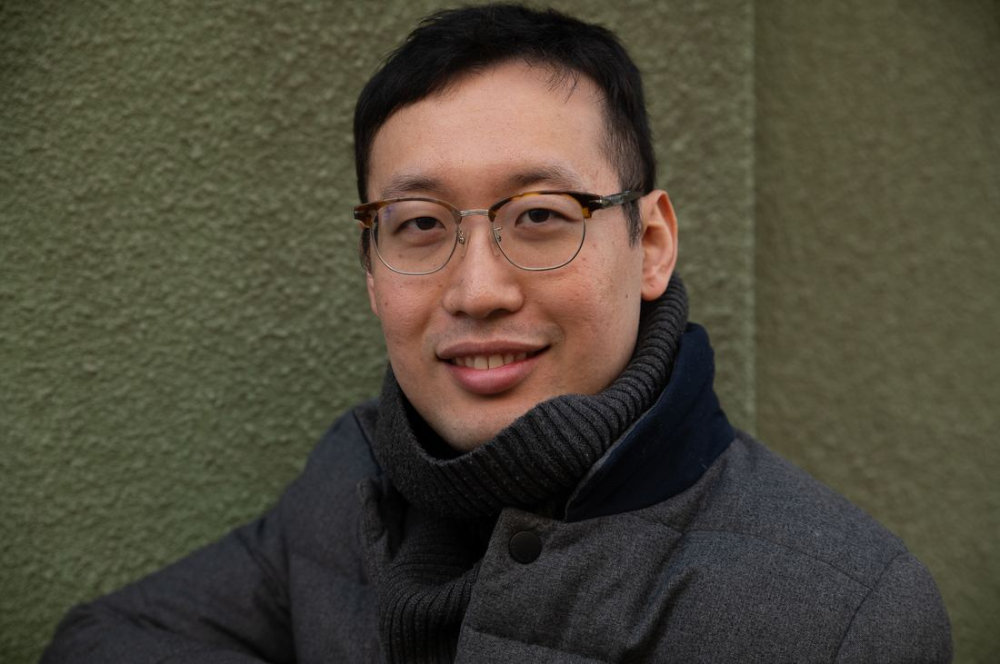

Esittely
About
Jeongdo Kim on Espoossa asuva filosofian tohtori, jonka ura on rakentunut kielten välisille silloille. Väitöskirjansa suomen onomatopoeettisista sanoista (Helsingin yliopisto, 2019) jälkeen hän on kirjoittanut tietokirjoja, kääntänyt japanilaista ja korealaista kirjallisuutta suomeksi sekä toiminut asioimistulkkina lukuisissa suomalaisissa virastoissa ja järjestöissä yli kymmenen vuoden ajan.
Hän opettaa korean ja japanin kieltä muun muassa Työväen Akatemiassa ja suomea Omniassa, ja on Heikki Paunosen kanssa kirjoittanut Stadin slangin sanakirjan Nyt mä bonjaan. Parhaillaan työn alla on useita käännösteoksia ja tietokirja suomen onomatopoeettisista sanoista.
Jeongdo Kim, based in Espoo, holds a PhD in Finno-Ugric linguistics from the University of Helsinki. His dissertation examined Finnish onomatopoeic words (2019), and since then he has written non-fiction, translated Japanese and Korean literature into Finnish, and worked as a community interpreter across Finnish public institutions for over a decade.
He currently teaches Korean and Japanese at Työväen Akatemia and Finnish at Omnia, and co-authored the Helsinki-slang dictionary Nyt mä bonjaan with linguist Heikki Paunonen. He is currently working on several literary translations and a book on Finnish onomatopoeia.
- Koulutus
- Education
- FT, Suomalais-ugrilaiset kielet — Helsingin yliopisto, 2019
- Erikoisala
- Specialty
- Suomen onomatopoetiikka ja etymologia
- Finnish phonosemantics & etymology
- ORCID
- 0000-0003-3615-6827
- Julkaisuja
- Publications
- n. 15 vertaisarvioitua artikkelia + väitöskirja
- ~15 peer-reviewed articles + dissertation
Kirjat ja käännökset
Books & Translations
Keskeinen osa työtäni on japanin- ja koreankielisen kirjallisuuden kääntäminen suomeksi sekä tietokirjojen kirjoittaminen.
A central part of my work is translating Japanese and Korean literature into Finnish, and writing non-fiction.
Käännetyt teokset (japani / korea → suomi)
Translated works (Japanese / Korean → Finnish)
Tietokirjat
Non-fiction
Oppikirja & toimitetut teokset
Textbook & Edited Volumes
Palvelut
Services
Kolme tapaa, joilla voimme tehdä yhteistyötä.
Three ways we can work together.
Tulkkaus
Interpreting
Suomi–korea-asioimistulkkaus virastoille, järjestöille ja yrityksille. Yli kymmenen vuoden kokemus, mm. maahanmuutto-, terveys- ja oikeusalan tulkkauksesta.
Finnish–Korean community interpreting for public authorities, organisations, and businesses. Over a decade of experience, including immigration, healthcare, and legal settings.
Käännökset
Translation
Kaunokirjallisuuden ja asiatekstien kääntäminen japanista ja koreasta suomeksi. Myös asiakirjojen ja käyttötekstien kääntäminen suomen ja korean välillä. Erityisosaamista kielihistoriassa ja etymologiassa.
Literary and non-fiction translation from Japanese and Korean into Finnish. Also document and general translation between Finnish and Korean. Particular expertise in language history and etymology.
Kielten opetus
Language Teaching
Korean, japanin ja suomen yksityis- ja ryhmäopetus kaikille tasoille. Materiaalit räätälöidään oppijan tavoitteiden mukaan.
Private and group tuition in Korean, Japanese, and Finnish, for all levels. Materials tailored to each learner's goals.
Tieteelliset julkaisut
Scholarly Publications
Valikoima vertaisarvioituja artikkeleita suomen kielen etymologian, onomatopoetiikan ja Stadin slangin alalta.
A selection of peer-reviewed articles on Finnish etymology, phonosemantics, and Helsinki slang.
- 2024 Sanan kolikko etymologia muotin ja paronymian valossa. — Virittäjä 2/2024, 266–272.The etymology of the word kolikko in light of blending and paronymy. — Virittäjä 2/2024, 266–272.
- 2024 Kielivalinnat ja kielenvaihtaminen ensikielisten ja ei-ensikielisten suomenpuhujien keskusteluissa (yhdessä Toivolan, Heikkolan & Salorannan kanssa). — AfinLA-teema 17, 117–141.Language choice and code-switching among native and non-native Finnish speakers (with Toivola, Heikkola & Saloranta). — AfinLA-teema 17, 117–141.
- 2023 Etymologista pohdintaa hullu-sanasta. — Sananjalka 65, 291–294.On the etymology of the word hullu ("crazy"). — Sananjalka 65, 291–294.
- 2022 Lisää uusia lainaetymologioita suomen onomatopoieettisille sanoille. — Virittäjä 2/2022, 262–272.More new loan etymologies for Finnish onomatopoeic words. — Virittäjä 2/2022, 262–272.
- 2020 Variations in Uralic words: The case of the Uralic *tVr-stem. — Acta Linguistica Petropolitana 16.3, 146–158.Variations in Uralic words: The case of the Uralic *tVr-stem. — Acta Linguistica Petropolitana 16.3, 146–158.
- 2018 Uusia etävastineita suomen onomatopoeettisille sanoille. — Uralica Helsingiensia 10, 181–204.New distant cognates for Finnish onomatopoeic words. — Uralica Helsingiensia 10, 181–204.
- 2015 Onomatopoeettisuuttako vain? Uusia etymologioita suomen onomatopoeettisille sanoille. — Sananjalka 57, 129–150.Merely onomatopoeic? New etymologies for Finnish onomatopoeic words. — Sananjalka 57, 129–150.
- 2019 Väitöskirja: Hulisemisesta hulinaksi. Onomatopoieettisuuden haalistuminen suomen fonesteemisten substantiivien valossa. Helsingin yliopisto.Dissertation: Hulisemisesta hulinaksi. The fading of iconicity in Finnish phonaesthemic nouns. University of Helsinki.
Medialla
In the Press
Poimintoja haastatteluista ja jutuista.
A selection of interviews and features.
Yhteystiedot
Contact
Olen kiinnostunut uusista tulkkaus-, käännös- ja opetustöistä sekä yhteistyöstä kustantajien ja järjestöjen kanssa. Ota rohkeasti yhteyttä.
I welcome new interpreting, translation, and teaching assignments, as well as collaboration with publishers and organisations. Feel free to get in touch.
- SähköpostiEmailkjd7321@gmail.com
- ORCID0000-0003-3615-6827
- SijaintiLocationEspoo, Suomi / Finland